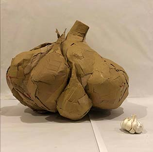
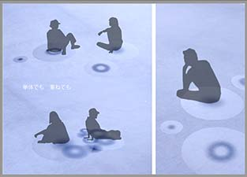
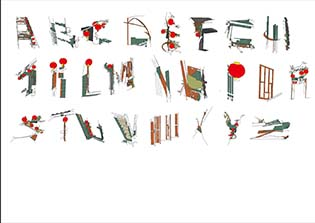
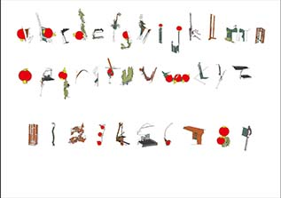
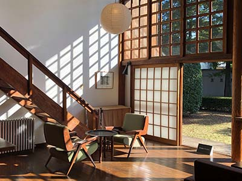

# tamaki-designwork.github.io

<html>
<head>
<meta charset="utf-8">
<title>環のホームページ</title>
<link rel="stylesheet" href="css/top.css">
</head>
<body>

<header>
<h1 class="top">Tamaki Nakazawa</h1>
<h2 class="top">Portfolio</h2>
</header>
<main>

<!-- Profile -->
	<section class="profile">
		<h3>Profile</h3>
		
		<div>
		
		<dl>
		<dt>
		中澤環
		</dt>
		<dd>
		長野県佐久市出身（軽井沢町の隣の市）<br>
		武蔵野美術大学　基礎デザイン学科 <br>
		<p>最近めっちゃ寝落ちします。</p>
		<p>実家の薪ストーブが恋しくなってきました。</p>
		</dd>
		</dl>
		</div>
	</section>
<!-- Works -->
	<section class="works">
		<h3>Works</h3>
		<h4>Website</h4>
		<ul>
		<li>
			<span><a href="works/1.html"></a></span>
			<dl>
			<dt>Logo</dt>
			</dl>
		</li>
		<li>
			<span><a href="works/2.html"></a></span>
			<dl>
			<dt>Collage</dt>
			<dd>
			<p>Episode&#8547;   "A NEW HOPE"</p>
			</dd>
			</dl>
		</li>
		</ul>
	</section>
<!-- ←htmlではこれ！→ -->

<!-- Other works -->
<section class="otherworks">
		<h5>Other works</h5>
		<ul>
		<li>
			<span><a href="works/3.html"></a></span>
			<dl>
			<dt>共通彫塑</dt>
			<dd>にんにく</dd>
			</dl>
		</li>
		<li>
			<span><a href="works/4.html"></a></span>
			<!-- </a><a href="works/5.html"> -->
			<dl>
			<dt>座る形のデザイン</dt>
			<dd>Cozy</dd>
			</dl>
		</li>
		<li>
			<span><a href="works/5.html"></a></span>
			<!-- </a><a href="works/7.html"> -->
			<dl>
			<dt>形態論</dt>
			<dd>九份font</dd>
			</dl>
		</li>
		</ul>
	</section>

	<section class="photos">
		<h6>Photos</h6>
		<ul>
		<li>
			<span><a href="works/6.html"></a></span>
		<dl>
			<dt>Favorite photo collection</dt>
		</dl>
		</li>
		</ul>
	</section>

</main>
</body>
</html>
